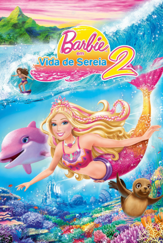
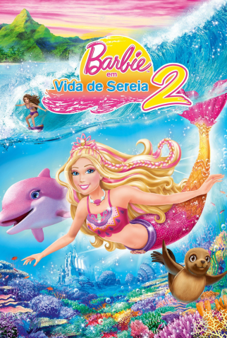

Iniciando...
Barbie é uma boneca utilizada como brinquedo infantil, criada pela empresa americana Mattel em 9 de março de 1959. Criada pela empresária Ruth Handler, a boneca originalmente seria baseada na boneca alemã Bild Lilli, que mais tarde foi comprada pela Mattel.
Seu nome verdadeiro é Barbara Millicent Roberts, e ela possui três irmãs: Skipper, Stacie e Chelsea, três personagens icônicos da linha de bonecas, de produtos e de filmes da Barbie. A primeira entre as irmãs da Barbie, Skipper é a adolescente fã de tecnologia. Além dos filmes da franquia, a personagem já apareceu em livros e nos quadrinhos da boneca.
A Barbie é a protagonista de uma marca de bonecas e acessórios da Mattel, contando com outros membros da família e modelos de bonecas colecionáveis. A boneca tem sido influente na indústria de brinquedos por mais de sessenta anos, além de ter sido alvo de controvérsias e processos judiciais referentes a sua aparência e estilo de vida. A Mattel já vendeu mais de bilhões de bonecas Barbie, tornando-a a linha de produtos mais lucrativa da empresa.
A marca de bonecas expandiu-se para uma franquia de mídia com o lançamento de uma série de filmes de animação, iniciada em 2001. Além dos filmes, tornou-se um veículo para a venda de outras mercadorias como roupas, série de animação, jogos eletrônicos entre outros produtos.
A Primeira Barbie
Em 9 de março de 1959, a primeira boneca Barbie é apresentada ao público na Feira Americana de Brinquedo, na cidade de Nova York. Com 28 centímetros de altura e vasta cabeleira loira, a Barbie foi a primeira boneca produzida em massa nos Estados Unidos com feições de adulta.
A mulher por detrás de Barbie era Ruth Handler, cofundadora com seu marido, em 1945, da fábrica de brinquedos Mattel Inc.
Após notar que sua filha mais nova passara a ignorar as bonecas de sua infância para brincar de faz-de-conta com bonecas de papel de mulheres adultas montadas a partir de recortes de revista, Handler se deu conta que havia um importante nicho no mercado de brinquedos que proporcionasse às meninas, ainda vivendo a infância, imaginar o seu futuro.
A aparência de Barbie foi moldada segundo uma boneca chamada Lilli, por sua vez baseada numa personagem de uma tirinha cômica alemã. Originalmente oferecida ao mercado para ser vendida em tabacarias, como presente um tanto picante a homens adultos, a boneca Lilli se tornou mais tarde extremamente popular entre as crianças.
Mattel comprou os direitos de Lilli e produziu sua própria versão, que Handler chamou de Barbara, o nome de uma de suas filhas. Com seu patrocínio do programa de televisão "Mickey Mouse Club" em 1955, a Mattel tornou-se a primeira fábrica de brinquedos a realizar comerciais para crianças.
Usaram a televisão para promover seu novo brinquedo e, em 1961, a enorme demanda dos consumidores da boneca levou a Mattel a criar um namorado para a Barbie. Handler denominou-o Ken, o nome de seu filho. A melhor amiga de Barbie, Midge, veio à luz em 1963, e sua irmãzinha, Skipper, estreou no ano seguinte.
Influência na Moda

A boneca Barbie inspirou o estilista Jeremy Scott, à frente da marca italiana Moschino, na sua coleção primavera-verão 2015, desfilada na última sexta-feira, dia 19, na Semana da Moda de Milão.
Pela passarela milanesa as modelos desfilaram caracterizadas como a boneca de plástico mais famosa do mundo. O criador surpreendeu por levar o icônico mundo rosa da Mattel às novas tendências da moda na sua segunda coleção como diretor criativo da Moschino.
"Cada menina e muitos meninos pequenos cresceram amando a Barbie. Portanto, ela é a inspiração para a coleção desta temporada. Não há outras referências porque ela abrange tudo. A Barbie teve todos os trabalhos e foi até mesmo uma astronauta", afirmou Jeremy Scott, segundo publica o diário The Telegraph.
No desfile, predominou o rosa, cor da Barbie por excelência, nas suas versões fúcsia ou ‘tutti-frutti’, as perucas loiras e os acessórios XG.
Também foram exibidas peças de todos os estilos, desde o desportivo às roupas de festa, já que, como lembrou o criador, "a Barbie tem todos os looks".
E para as mais viciadas na boneca, também foi exibido um protetor para iPhone no formato de um espelho rosa.
Filmes
 
 Representatividade
Com o passar do tempo, versões da boneca com diferentes tons de pele, cor e tipos de cabelo, foram sendo criadas. Em 1980, foi criada uma coleção onde a Barbie usava roupas típicas de vários países como México, Chile, Jamaica, Brasil, Japão e Nigéria. Atualmente, não é só pela roupa que a boneca representa as diferentes culturas do mundo, temos bonecas que representam costumes e etnias diversas.
No ano de 2021, as jogadoras olímpicas e paralímpicas mexicanas Paola Espinosa, Francisca Mardones e Paola Longoria foram homenageadas pelas bonecas da Mattel. A primatologista Jane Goodall e a biomédica baiana Jaqueline Goes também ganharam a sua versão do brinquedo. E além do mais, como um grande símbolo na luta pela diversidade e inclusão, a atriz Laverne Cox, foi a primeira mulher trans a ter uma versão sua na boneca.
Além disso, no ano de 2018, em comemoração ao Dia da Mulher, a Mattel anunciou a campanha #MoreRoleModels. Essa, por sua vez, conta com a representatividade de personalidades conhecidas mundialmente, como Frida Kahlo, Katherine Johnson e Amelia Earhart.